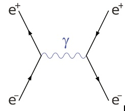

Interaction Forces and Feynman Diagrams
We have already looked at what are the ‘ingredients’ in the standard model. This section will focus more on the interaction between different particles. In particle physics, we call an interaction between particles an event. An essential
tool to visualise events is through Feynman diagrams. Let’s first try to understand some of the conventions used in Feynman diagrams.
Here is an example of a Feynman diagram showing two electrons repelling off each other by exchange of photon. The fancy term for this process is electron scattering.
Time goes from left to right while the ‘up-down’ direction is spatial. So to illustrate, the point ‘A’ happened before point ‘B’. The red arrows and text are here just
to illustrate the coordinates – usually these are not present in a Feynman diagram.You can imagine this exchange of momentum visually in a similar way by imagining two stationary boats, with one person in each. One contains a rock,
which is analogous to the photon in the Feynman diagram.
When the person with the rock in their boat throws it into the other boat, boat one recoils, and boat two recoils in the other
direction when person two catches the rock. The straight lines represent real particles (in this case electrons) and the squiggly lines represent what are called ‘virtual particles’. They are called virtual particles because they
can’t be directly observed and exist for a short period of time to mediate the interaction. The virtual particle in this case is the photon, which only exists from time at point ‘A’ to time at point ‘B’.
Another convention to note is that the arrows do not indicate direction of motion. The arrows only indicate whether the particle is matter or antimatter.
Direction of motion is unambiguous without the arrows because Feynman diagrams chart both space and time. Let’s see an example below, showing the annihilation of an electron and a positron. Here the positron is the anti-particle
hence it has arrows point in the ‘negative time’ direction.
The basic structure of the Feynman diagram is to visualise particle physics events and aid in calculation. Another key idea is that certain conservation laws
must hold at each vertex of a Feynman diagram. For example, charge must be conserved at each vertex. We’ll now move on to talk about conservation laws in general. But first, leave a summary of the basic take-aways from Feynman
Diagrams.
*summary*
- in Feynman diagrams, the progression of time is from left
to right
- straight lines indicate particles while squiggly lines indicate force carrying virtual particles
- the direction of arrows only indicate whether the particle
in question is a particle or anti-particle - certain conservation laws hold
at each vertex
Figure 1. Feynman diagram for electron scattering.
Figure 2. Feynman diagram for electron - positron anhiliation